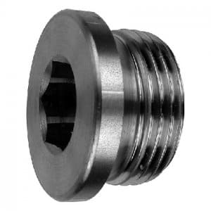

DIN 908 Заглушка-пробка с внутренним шестигранником
Стандарт
DIN 908
Цена от
21,60 ₽
Размерный ряд
включают различные диаметры метрической резьбы от М8х1 до М64х2, дюймовой от 1/8 до 2 дюймов
Заглушки » DIN 908 Заглушка-пробка резьбовая с внутренним шестигранником
Варианты и размеры (25)
| Наименование | Размер | Длина, мм | Материал | Покрытие | Цена |
|---|---|---|---|---|---|
| DIN 908 Заглушка-пробка с внутренним шестигранником L=2мм | 2 | 15,70 ₽ | |||
| DIN 908 Заглушка-пробка с внутренним шестигранником M10 L=5мм | M10 | 5 | 26,40 ₽ | ||
| DIN 908 Заглушка-пробка с внутренним шестигранником M12 L=5мм | M12 | 5 | 29,60 ₽ | ||
| DIN 908 Заглушка-пробка с внутренним шестигранником M14 L=5мм | M14 | 5 | 32,90 ₽ | ||
| DIN 908 Заглушка-пробка с внутренним шестигранником M16 L=5мм | M16 | 5 | 36,20 ₽ | ||
| DIN 908 Заглушка-пробка с внутренним шестигранником M18 L=5мм | M18 | 5 | 39,50 ₽ | ||
| DIN 908 Заглушка-пробка с внутренним шестигранником M20 L=5мм | M20 | 5 | 42,80 ₽ | ||
| DIN 908 Заглушка-пробка с внутренним шестигранником M22 L=5мм | M22 | 5 | 46,10 ₽ | ||
| DIN 908 Заглушка-пробка с внутренним шестигранником M24 L=5мм | M24 | 5 | 49,40 ₽ | ||
| DIN 908 Заглушка-пробка с внутренним шестигранником M26 L=5мм | M26 | 5 | 52,70 ₽ | ||
| DIN 908 Заглушка-пробка с внутренним шестигранником M27 L=12мм | M27 | 12 | 60,60 ₽ | ||
| DIN 908 Заглушка-пробка с внутренним шестигранником M30 L=17мм | M30 | 17 | 71,00 ₽ | ||
| DIN 908 Заглушка-пробка с внутренним шестигранником M30 L=5мм | M30 | 5 | 59,30 ₽ | ||
| DIN 908 Заглушка-пробка с внутренним шестигранником M33 L=17мм | M33 | 17 | 76,90 ₽ | ||
| DIN 908 Заглушка-пробка с внутренним шестигранником M36 L=19мм | M36 | 19 | 85,10 ₽ | ||
| DIN 908 Заглушка-пробка с внутренним шестигранником M36 L=5мм | M36 | 5 | 69,20 ₽ | ||
| DIN 908 Заглушка-пробка с внутренним шестигранником M38 L=5мм | M38 | 5 | 72,50 ₽ | ||
| DIN 908 Заглушка-пробка с внутренним шестигранником M42 L=5мм | M42 | 5 | 79,10 ₽ | ||
| DIN 908 Заглушка-пробка с внутренним шестигранником M45 L=5мм | M45 | 5 | 84,00 ₽ | ||
| DIN 908 Заглушка-пробка с внутренним шестигранником M48 L=5мм | M48 | 5 | 88,90 ₽ | ||
| DIN 908 Заглушка-пробка с внутренним шестигранником M52 L=32мм | M52 | 32 | 138,00 ₽ | ||
| DIN 908 Заглушка-пробка с внутренним шестигранником M52 L=5мм | M52 | 5 | 95,50 ₽ | ||
| DIN 908 Заглушка-пробка с внутренним шестигранником M56 L=32мм | M56 | 32 | 147,00 ₽ | ||
| DIN 908 Заглушка-пробка с внутренним шестигранником M64 L=32мм | M64 | 32 | 166,00 ₽ | ||
| DIN 908 Заглушка-пробка с внутренним шестигранником M8 L=5мм | M8 | 5 | 23,10 ₽ |